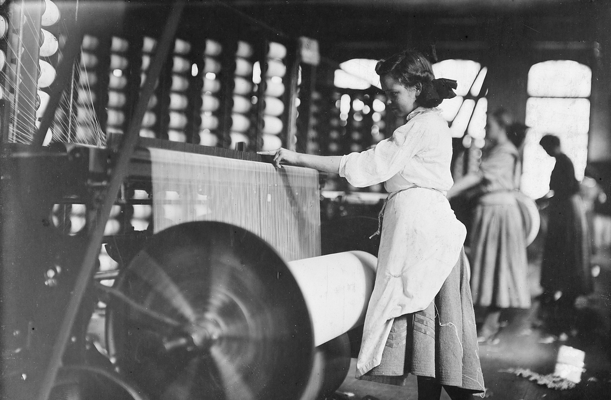
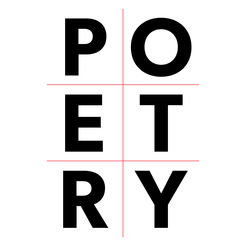

Here is the Humanities 10 page for Project 2. In this class, I chose a photo from the Industrial Revolution based of off Child Labor. I had to do a poem and a collage that reflected off the image. Lastly, there was an Artistic Written Statement that I was assigned to do in which we had to talk about the choices that I made in both my poem and collage. I chose another topic to do another poem and collage which was based on Social Media and Family.There was also a Artistic Written Statement connected to it. Everything is listed below.
Industrial Revolution:Child Labor
Primary Source Image
Above is an image that I chose of a young girl working on a weaving machine and this photo was taken by Lewis Hine. Click the image for it to open in a new tab.
Poem Based off of Image
Click on the poem image above in order to view the document that contained my poem that was based off of the photo that I was given. My poem was based off of child labor and so I also put some of my lines from my poem in the young girl's perspective which was in my photo. I used many different poetry crafts moves which helped makde my poem more effective
Art Piece on Child Labor

Above is a collage that I did based off of my photo and poem. I used many different principles of composition to make it look creative and unique. Click the image to see it more clearly.
Artistic Written Statement

In the image on top, I wrote an artistic statement that included information on the choices the I made in my poem and collage.